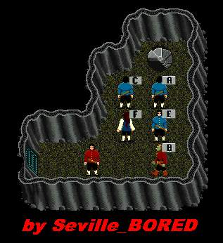
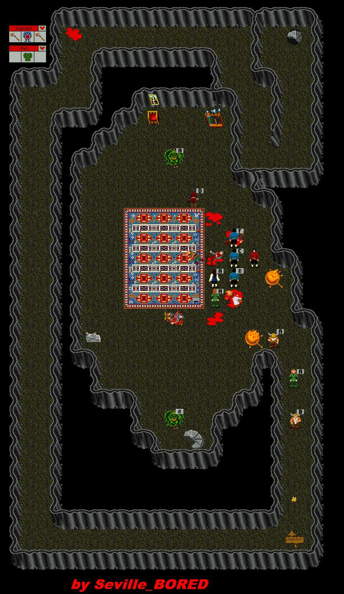

Lair

 |
||||||||||
| Vanidor Lair |
||||||||||
| Vanidor would welcome you to his lair by shaking hands but his hands are full with 2 Pets and 2 Axes. Axes are +5. Best tactic is to draw off and kill each Pet in turn, then take on Vanidor directly. A very fun Lair. This cave leads down the stairs to Vanidor. Useful as a staging area. Taking the stairs Northeast of the Lair will take you to Undead City -5. | ||||||||||
 |
||||||||||
| Back to Cobrahn. | ||||||||||